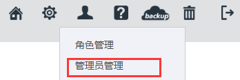
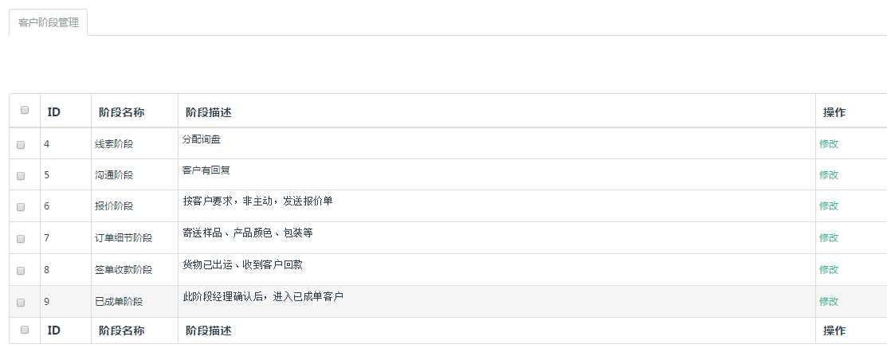
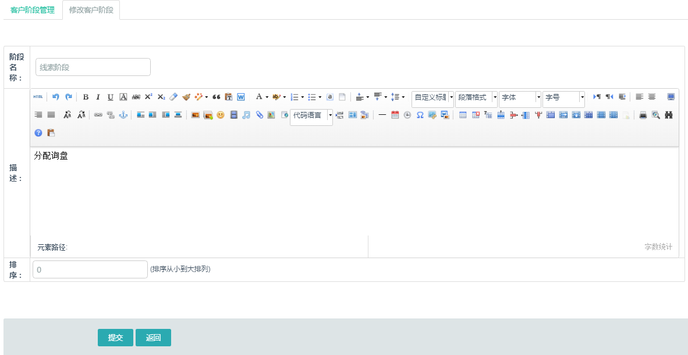

1.了解整体功能，都点一遍；
2.设置（分公司设置，常规设置等）；
3.业务员抓取，添加拜访记录，阶段申请，下订单，回款。大家可以通过给你们的账号添加新的业务员或业务经理账号，也可以去“管理员管理”中查看已有的业务员或业务经理，登录他们的账户看看区别，密码应该是123456

阶段名称可以修改，但不能删除。
在CRM系统>CRM系统设置>客户阶段管理
整个订单过程预设的六个阶段为：线索阶段，沟通阶段，报价阶段，订单细节阶段，签单收款阶段，已成单阶段。您可以根据实际情况，修改阶段名称和阶段描述

